Scenario and Objectives
A workflow depends on a product service that is unavailable during development. You will configure static results on the HTTP action, verify two control-flow paths, and then restore live behavior.
- Build a small HTTP-request workflow.
- Mock a successful downstream response.
- Mock a failed action and verify failure handling.
- Disable static results before completing the lab.
Limit: static results apply to actions, not triggers. Trigger the workflow normally and mock only the downstream HTTP action.
Test Design
flowchart LR T[HTTP trigger] --> H[HTTP product lookup] H -->|Mock succeeded| C[200 response] H -. Mock failed .-> F[Failure handler] F --> E[503 response] classDef azure fill:#e6f2fb,stroke:#0078d4,stroke-width:2,color:#0f1722; classDef result fill:#e7f5e7,stroke:#107c10,stroke-width:2,color:#103010; class T,H,F azure; class C,E result;
Prerequisites
- An Azure subscription with permission to create or edit a logic app in your lab resource group.
- A REST client such as PowerShell or curl, or the designer's run-with-payload option.
Build the Test Workflow
- Create or open a lab Logic App workflow in the portal.
- Add When an HTTP request is received, set method to POST, and paste the following into Request Body JSON Schema:
{ "type": "object", "properties": { "sku": { "type": "string" } }, "required": ["sku"] }Example POST body (send with
Content-Type: application/json):{ "sku": "AZ-100" }View screenshot
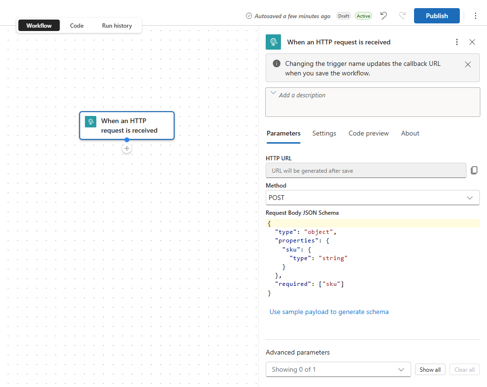
Step 2: Configure the POST trigger and paste the input schema into Request Body JSON Schema, not the example POST body. - Add an HTTP action named Product lookup. Set method GET and URI to
https://example.invalid/products/@{triggerBody()?['sku']}. The reserved invalid domain ensures a live call cannot reach a real service.View screenshot
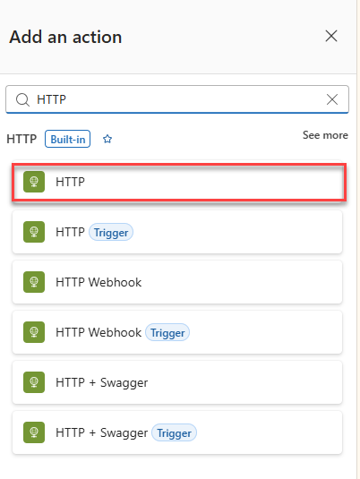
Step 3: Select HTTP under the Built-in HTTP group. Choose the entry without the Trigger badge. View screenshot
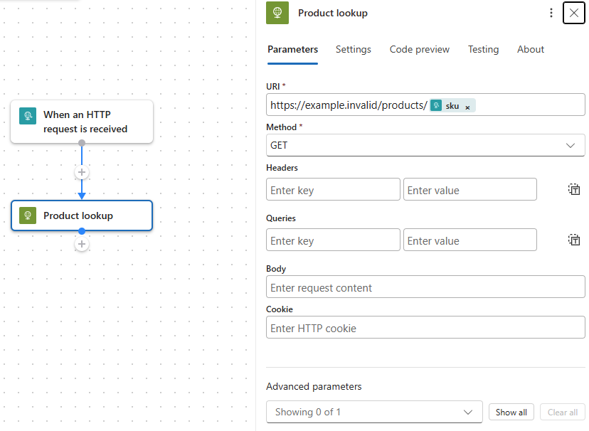
Step 3: Rename the action Product lookup, set GET, and append the trigger's sku value to the product URI. - Add a Response action named Product found, set Status Code to
200, and paste the following JSON into its Body field:{ "requestedSku": "@{triggerBody()?['sku']}", "product": "@{body('Product_lookup')}", "testRun": "@{workflow()?['run']?['name']}" }View screenshot
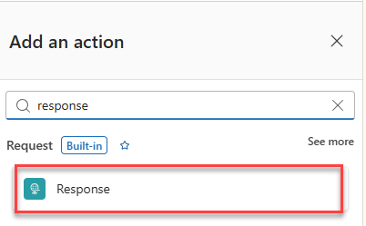
Step 4: Search for response and select Response under Request (Built-in). View screenshot
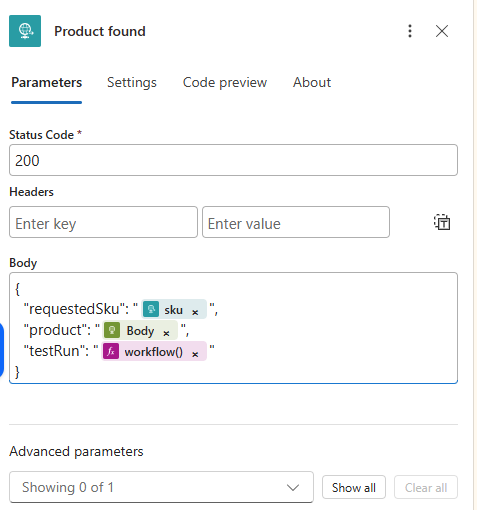
Step 4: Set Status Code to 200 and enter the response JSON in Body. Tokens abbreviate their contents; verify the full expressions against the JSON above. - Below Product lookup, add a parallel branch with a Response action named Dependency unavailable, status 503. Configure its Run after to run only when Product lookup has failed or timed out.
View screenshot
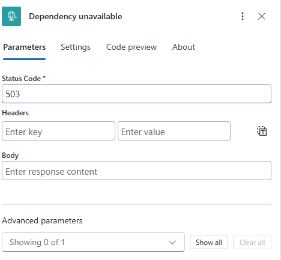
Step 5: Set the parallel branch's Dependency unavailable response to HTTP 503. The response body can be left empty. View screenshot
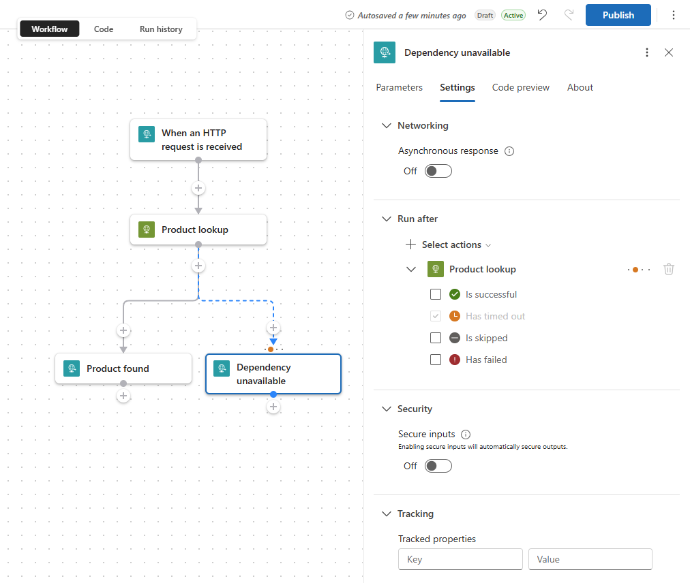
Step 5: Under Settings > Run after > Product lookup, select both Has failed and Has timed out; clear Is successful and Is skipped. This screenshot shows only Has timed out selected: also select Has failed so the mocked failure test reaches the 503 response. - Select the Product found Response action, open Settings, and expand Run after. For Product lookup, select only Is successful. Clear Has failed, Is skipped, and Has timed out. This makes the HTTP 200 response run only when Product lookup succeeds, including when you mock a successful result. Save the workflow.
View screenshot
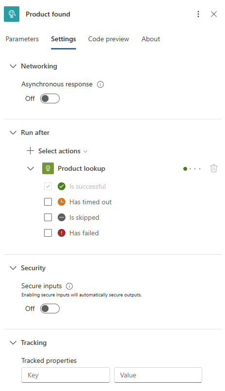
Step 6: Product found must run after Product lookup only when Is successful is selected. - Review the final workflow using the screenshot below. Confirm that When an HTTP request is received connects to Product lookup, followed by parallel Product found and Dependency unavailable responses. Save the workflow. If your designer shows Publish, publish the draft before testing.
View screenshot
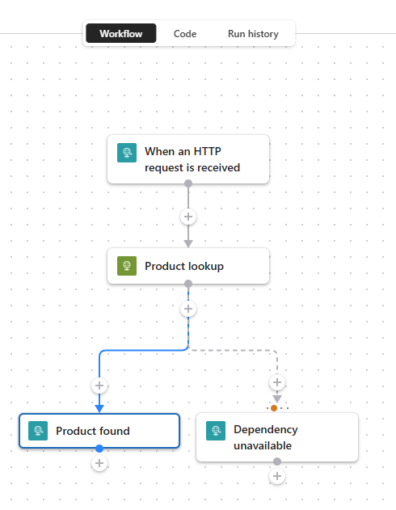
Step 7: Final workflow. Both responses must branch directly from Product lookup.
Test a Successful Action
- Select Product lookup and open its Testing tab.
- Select Enable Static Result.
- Set action status to Succeeded. Configure outputs with status code 200 (shown as OK in some designers), content-type
application/json, and the following mocked product body:{ "sku": "AZ-100", "name": "Workflow Mug", "price": 18.50, "inventory": 24 }View screenshot
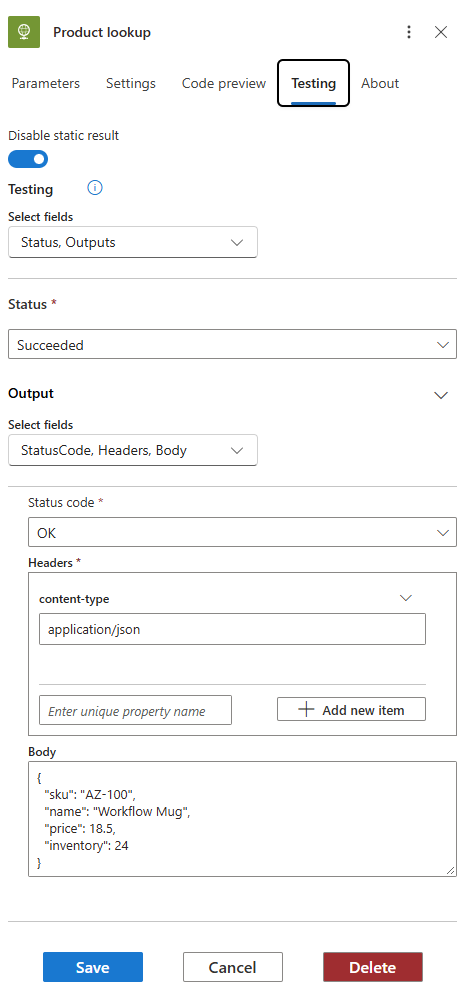
Step 3: Configure the static result on Product lookup and select Save. OK means HTTP 200. The larger product object goes in this action's mocked Body, not the trigger payload. - Save the static-result settings. In the designer shown below, select the payload icon beside Run draft. Set Content-Type to
application/json, enter{ "sku": "AZ-100" }in Body, and select Run draft with payload. This tests the draft without publishing. If your designer has no draft option, save or publish as required and use its run-with-payload option.View screenshot
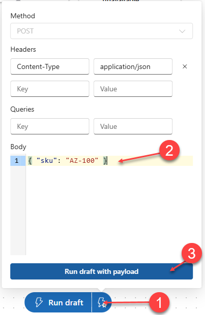
Step 4: Open the payload panel (1), enter the trigger's SKU input (2), and select Run draft with payload (3). - Open Run history, select the new run (marked Draft when applicable), and select Product lookup. Verify its static-result indicator, Succeeded status, OK output status code, and mocked product body. Also inspect both Response actions to verify the selected control-flow path.
View screenshot
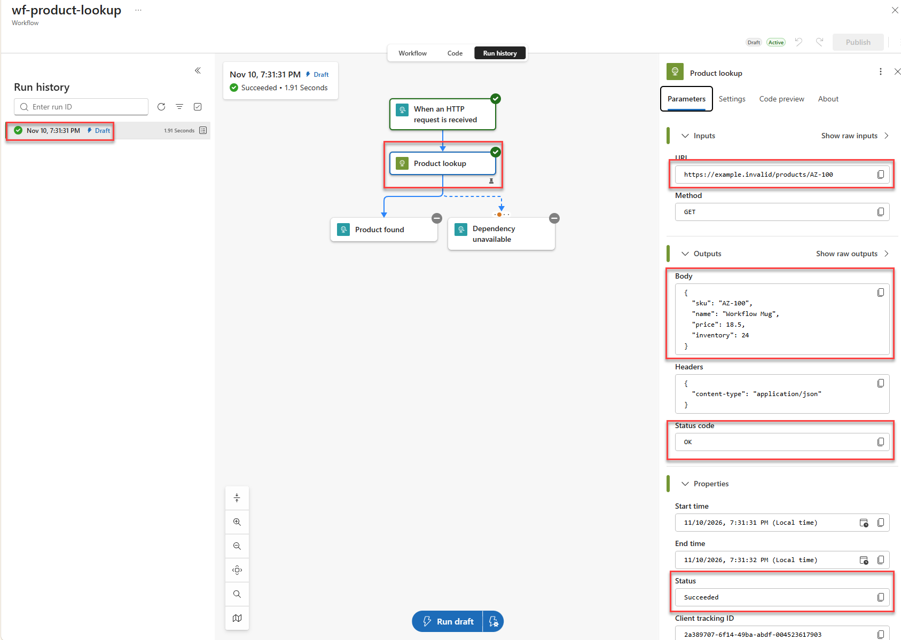
Step 5: Inspect the mocked lookup's outputs in run history. This screenshot confirms the lookup's static result, but both Response actions are shown as skipped; it does not demonstrate the complete HTTP 200 response path. Check your own run's response actions before considering that path validated.
- The action displays the static-result beaker indicator.
- The workflow returns HTTP 200 with the mocked product.
- Run details show Product lookup used a static result.
Test a Failed Action
- Return to the Product lookup action's Testing tab and edit its enabled static result.
- In the top Select fields dropdown, select Status, Code, and Error. Set Status to Failed and the top-level Code to
ProductServiceUnavailable. Under Error, select Message and Code, enterSimulated product service failure for testing.as the Error message, and chooseServiceTemporarilyUnavailableas the Error code. A Failed static result requires the error details; setting an output HTTP status code alone is not sufficient.View screenshot
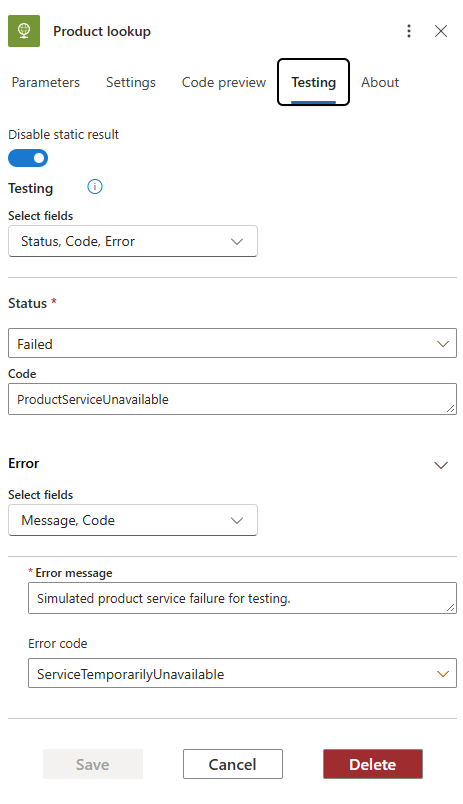
Step 2: Configure the failed static result with both the top-level Code and the nested Error fields. Outputs are not required for this mock; the separate Dependency unavailable Response action supplies HTTP 503. - Save the static-result settings and use Run draft with payload again with the same trigger input:
{ "sku": "AZ-100" }. If your designer has no draft option, save or publish as required and use its run-with-payload option. - In Run history, select the new run and open Product lookup. Verify its Failed status, static-result indicator, error code, and test message. Then confirm Product found is skipped and Dependency unavailable runs with response status code 503. An empty response body is expected if you left the 503 response Body field empty.
View screenshot
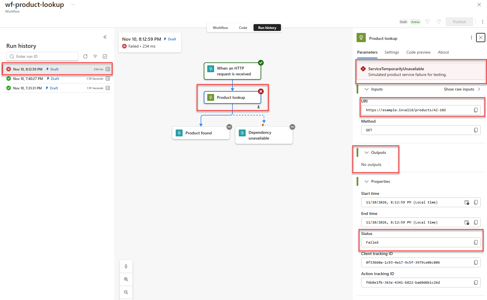
Step 4: Inspect the mocked failure and error details. This example uses SKU AZ-102; you can keep AZ-100 for the lab. Both responses are shown as skipped, so this screenshot does not validate the 503 response path. If Dependency unavailable is skipped in your run, check that its Run after for Product lookup includes Has failed, then rerun.
What to inspect
Open each action in run details. Verify the mocked error is visible, the run-after rule selected the failure path, and no outbound request reached the invalid URI.
Restore Live Behavior
- Select Product lookup, open Testing, and switch off static results. Depending on the designer, choose Disable Static Result or turn the toggle off so the label reads Enable static result.
View screenshot
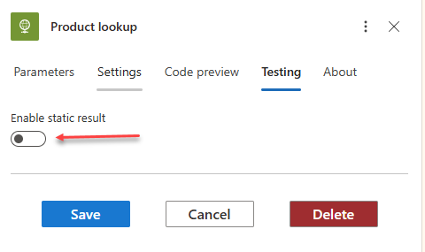
Step 1: Turn static results off. The gray toggle and Enable static result label show that mocking is disabled; select Save to apply the change. - Save the workflow and confirm the beaker indicator is gone.
- Do not run against a production endpoint until authentication, authorization, retry, timeout, and test-data controls are ready.
Important: disabling static results can preserve the configured mock values for reuse. The absence of the enabled indicator is what confirms the action will call its configured endpoint.
Troubleshooting
| Symptom | Check |
|---|---|
| Testing tab is unavailable | Static results are action-specific; select the HTTP action rather than the trigger or a control. |
| Success response is skipped | Check the mocked action status and the Response run-after settings. |
| Workflow calls the URI | Confirm static results are enabled and the action shows its test indicator before running. |
Cleanup and References
Disable static results, disable or delete the test workflow, and remove the lab resource group when finished.
Microsoft Learn: Test workflows with mock outputs and Workshop topic: Workflow Testing.